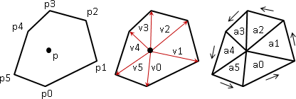
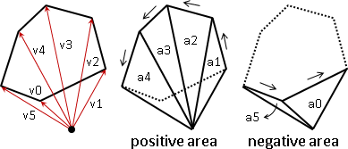
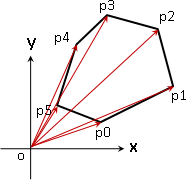
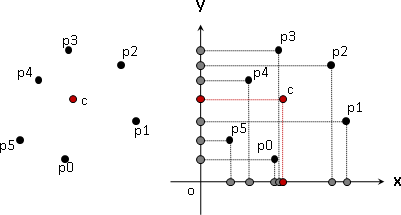
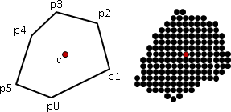
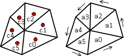

多邊形面積（Surveyor's Formula）
凸多邊形是特例中的特例，我們試著從凸多邊形開始觀察。

運用分治法的思想，把凸多邊形分割成三角形，就容易計算面積了。取凸多邊形內部一點作為基準點，連線至各個頂點，把凸多邊形切開成許多個三角形。現在我們可以利用外積，計算每個三角形的面積；然後通通加起來，得到凸多邊形面積。
詳細的步驟是：
一、建立基準點往各個頂點的向量。
二、依照頂點順序，計算相鄰向量的外積，得到平行四邊形面積。
三、除以二，得到三角形面積。
四、三角形面積通通加起來，得到凸多邊形面積。
步驟三和步驟四可以顛倒，除以二的次數變成只有一次：
三、平行四邊形面積通通加起來，得到凸多邊形面積的兩倍。
四、除以二，得到凸多邊形面積。

事實上，基準點也可以在凸多邊形邊界、甚至是外部。此時外積的結果有正值和負值，正值恰好對應到總面積，負值剛好對應到多餘面積。通通加起來，正負相消之後，恰好仍是凸多邊形面積。

基準點設定在原點是最方便的，如此一來就不必特地計算基準點往各個頂點的向量，可以直接拿相鄰兩點的座標計算外積。
此演算法可以推廣到簡單多邊形，甚至是一般的多邊形。時間複雜度為O(N)，N為多邊形的頂點數目。
我們可以把結果寫成數學式子，正是知名的行列式公式：
1 | x1 x2 x3 xN-1 xN x1 |
area = --- * | × × ... × × |
2 | y1 y2 y3 yN-1 yN y1 |
右下斜線相乘取正號，左下斜線相乘取負號，然後通通加起來，除以二。
如果是逆時針旋轉，求出來為正值。
如果是順時針旋轉，求出來為負值，必須再取絕對值。
一般來說我們會讓多邊形頂點順序為逆時針順序，以求得正值。
UVa 10060 10652 922
多面體體積
與多邊形面積的原理完全一樣。基本單元從三角形變成了四面體。
多邊形形心 / 多邊形重心

重力場均勻的時候，重心退化成為形心。
一群點的重心，是這些點的座標平均值，也就是X座標的平均值、Y座標的平均值。

多邊形的重心，則是多邊形內部暨邊界上所有點的座標平均值。但是不見得是所有頂點的座標平均值。
只有一些特別的多邊形，重心恰好是所有頂點的座標平均值──例如三角形的重心，恰好是三個頂點的座標平均值。

使用分治法的概念，把多邊形切開成許多個三角形，分別計算各個三角形的重心。然後以三角形面積做為權重，計算三角形重心的加權平均值，就得到多邊形的重心。
o + p0 + p1 o + p1 + p2
c0 = ------------- c1 = ------------- ...
3 , 3 ,
cross(p0, p1) cross(p1, p2)
a0 = --------------- a1 = --------------- ...
2 , 2 ,
c0 * a0 + ... + c9 * a9
centroid = -------------------------
a0 + ... + a9
UVa 10002 132 ICPC 4838